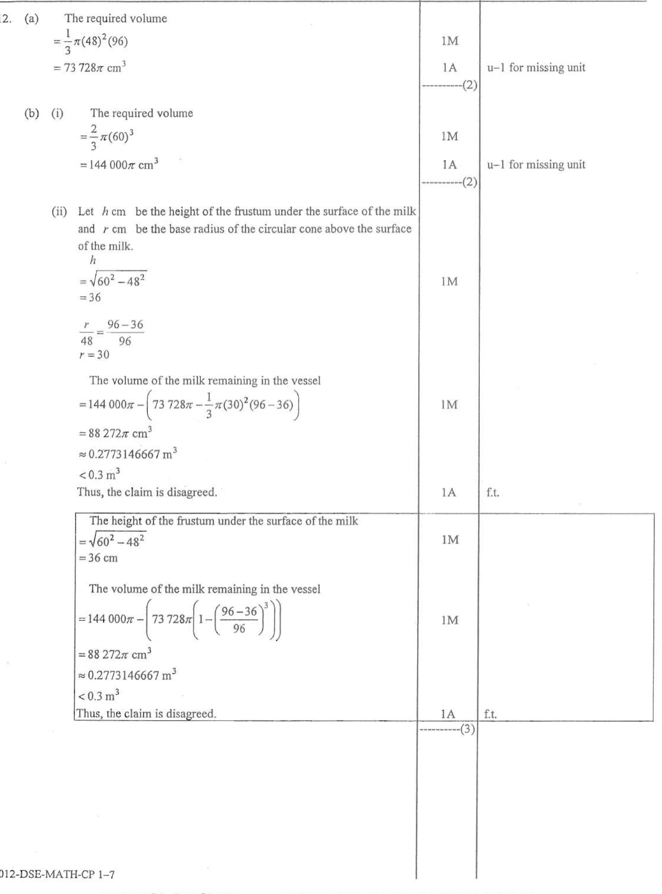

2012 DSE 數學 P1 Q12 答案＋詳解
題目（中文卷）
圖 3(a) 顯示底半徑為 $48\, \text{cm}$ 及高為 $96\, \text{cm}$ 的實心金屬直立圓錐體。


(a) 求該圓錐體的體積，答案以 $\pi$ 表示。 (2 分)
(b) 把半徑為 $60\, \text{cm}$ 的半球形容器鉛垂置於一水平面上。該容器載滿牛奶。
(i) 求該容器內牛奶的體積，答案以 $\pi$ 表示。 (5 分)
(ii) 現把該圓錐體鉛垂置於該容器內，如圖 3(b) 所示。某工匠宣稱剩下在該容器內的牛奶的體積大於 $0.3\, \text{m}^3$。你是否同意？試解釋你的答案。 請在此貼上電腦條碼
| | | | | | | | | | | | | | | | | | | | | | | | | | | | | | |
English version（英文卷題目）
Figure 3(a) shows a solid metal right circular cone of base radius 48 cm and height 96 cm.

(a) Find the volume of the circular cone in terms of π. (2 marks)
(b) A hemispherical vessel of radius 60 cm is held vertically on a horizontal surface. The vessel is fully filled with milk.
(i) Find the volume of the milk in the vessel in terms of π. (2 marks)
(ii) The circular cone is now held vertically in the vessel as shown in Figure 3(b). A craftsman claims that the volume of the milk remaining in the vessel is greater than 0.3 m³. Do you agree? Explain your answer. (5 marks)
官方評卷參考（Marking Scheme）

考評報告
甚佳。少數考生的答案遺漏了π。良好。部分考生錯誤地計算球體的體積而非半球體的體積。甚差。大部分考生誤以為剩下在該容器內的牛奶的體積等於該圓錐體體積與該半球體體積之差。